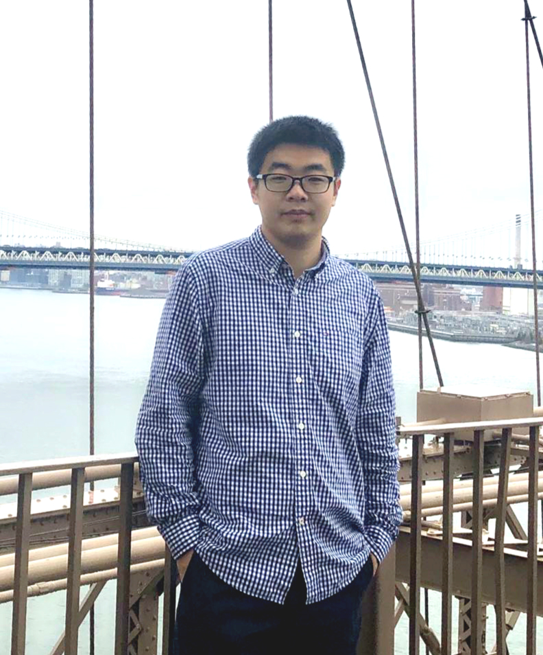

Zhenpeng Xu (徐振澎)
I am currently a Ph.D. student at the Advanced Manufacturing and Metamaterials Laboratory (AMML), University of California, Los Angeles, under the supervision of Prof. Xiaoyu (Rayne) Zheng. I am specialized in mechatronics, mechanical design, machining, mechanisms, metamaterials, structural and hybrid architectured materials, and composites. I am highly skilled in 3D printing technologies with 7+ years of experience. Besides, I started a business with my friends during my master's period; therefore, I have a lot of experience in product development (R&D, prototyping, mass production, marketing).
Links: Linkedin, Google Scholar
E-mail: xuzhenpeng AT outlook DOT com
Education
-
University of California Los Angeles, Los Angeles, CA, USA Sep. 2019 - Present
Ph.D. student, Civil Engineering
-
Virginia Tech, Blacksburg, VA, USA Jul. 2018 - Sep. 2019
Ph.D. student, Mechanical Engineering
-
University of Florida, Gainesville, FL, USA Aug. 2016 - Jun. 2018
M.Sc., Mechanical Engineering
-
Beihang University, Beijing, China Sep. 2012 - Jun. 2016
B.Eng., Mechanical Engineering
Experience
-
Graduate research assistant Jul. 2018 – Present
Virginia Tech & University of California, Los Angeles, USA
- Working in the Advanced Manufacturing and Metamaterials Laboratory of Dr. Xiaoyu Zheng. Developing additive manufacturing processes, particularly projection stereolithography.
-
Co-Founded XAYAV Inc.: Commercialization of a desktop LCD 3D printer Apr. 2017 - May. 2018
XAYAV Inc. (www.xayav.com), Gainesville, FL, USA
- Designed and prototyped a desktop LCD 3D printer by milling, lathe, CNC, hand tools, etc.
- Finalized the manufacturing processes of the printer, including metal machining, sheet metal forming, die casting, acrylic molding, PCB manufacturing, silk screen printing, etc.
- Investigated and visited suppliers (Shenzhen, China) for production.
- Managed the supplying chain to balance inventories and distribution.
- Optimized the sourcing and procurement of raw materials for 3D printers. Photos: [Packaging design], [Manufacuture at Shenzhen], [Assemblying], [Model V], [First printer we saled]
-
Project: Development of various 3D printers Sep. 2016 - Mar. 2017
XAYAV Technology Team, Gainesville, FL, USA
- Designed various types of 3D printers (FDM, SLS, DLP, and LCD 3D printers).
- Prototyped 3D printers by milling, lathe, CNC, hand tools, etc. Photos: [Cutter], [LCD printer prototype], [3D printed demo1], [3D printed demo2], [3D printed demo3]
-
Project: Development of a remote monitor based on STM32 microcontroller and Android Feb. 2016 - Jun. 2016
Beihang University, Beijing, China
- Based on STM32 microcontroller and mobile phone APP, designed a CNC machine tool wireless monitor system. Photos: [Monitor APP]
-
Internship, Assistant engineer Aug. 2015 - Sep. 2015
AVIC Harbin DongAn Engine (Group) Corporation LTD, Harbin, China
- Took part in the daily duty of 538 Workshop specializing in the production of complex shell and casing, studied 6S management.
- Designed aeronautical parts with Auto CAD and modified as actual processing technology.
-
Project: Computer vision navigation of quadrotor aircraft May. 2015 - Dec. 2015
Beihang University, Beijing, China
- Realized the real-time monitoring of specific objects and tracking of moving targets based on AdaBoost and SIFT (scale-invariant feature transform) algorithm.
- Fulfilled the automatic capture of the spatial body with any optional position, fully applying Bernoulli's law. Photos: [Team]
-
Project: Development of cellphone controlled water four-rotor aircraft May. 2014 - Dec. 2014
Beihang University, Beijing, China
- Proposed the design concept combining ship hull and four-rotor aircraft, achieved structure design and optimization.
- Designed and optimized the high real-time control system based on MWC control board.
- Integrated the Bluetooth module of Arduino, and realized the convenient operation of APP. Photos: [Aircraft1], [Aircraft2], [Flying video]
![[Packaging design]](project_photos/XAYAV_ModelV/Package.png){kind=link}
![[Manufacuture at Shenzhen]](project_photos/XAYAV_ModelV/Production.jpg){kind=link}
![[Assemblying]](project_photos/XAYAV_ModelV/Assemblying.jpg){kind=link}
![[Model V]](project_photos/XAYAV_ModelV/Model V.jpg){kind=link}
![[First printer we saled]](project_photos/XAYAV_ModelV/Shipping.jpg){kind=link}
![[Cutter]](project_photos/XAYAV/cutter.jpg){kind=link}
![[LCD printer prototype]](project_photos/XAYAV/LCD prototype.jpg){kind=link}
![[3D printed demo1]](project_photos/XAYAV/3D printed demo1.jpg){kind=link}
![[3D printed demo2]](project_photos/XAYAV/3D printed demo2.jpg){kind=link}
![[3D printed demo3]](project_photos/XAYAV/3D printed demo3.jpg){kind=link}
![[Monitor APP]](project_photos/Monitor_APP.png){kind=link}
![[Team]](project_photos/team.jpg){kind=link}
![[Aircraft1]](project_photos/aircraft_1.jpg){kind=link}
![[Aircraft2]](project_photos/aircraft_2.jpg){kind=link}
Publications
-
The coupled strength and toughness of interconnected and interpenetrating multi-material gyroids
[pdf][doi]
Padmeya P. Indurkar, Angkur Shaikeea, Zhenpeng Xu, Huachen Cui, Xiaoyu Zheng, Vikram Deshpande
In: MRS Bulletin, Apr 2022
-
Ultra-lightweight transmitarray antenna enabled by charge-programmed three-dimensional multi-Material printing
[pdf][doi]
Junbo Wang, Ryan Hensleigh, Zhenpeng Xu, Anastasios Papathanasopoulos, Xiaoyu Zheng, Yahya Rahmat-Samii
In: NRSM-URSI 2022, Dec 2021
-
Vat photopolymerization of fly-like, complex micro-architectures with dissolvable supports
[pdf][doi]
Zhenpeng Xu, Ryan Hensleigh, Nikhil JRK Gerard, Huachen Cui, Mourad Oudich, Wentao Chen, Yun Jing, Xiaoyu Zheng
In: Additive Manufacturing, Sep 2021
-
Stiff and strong, lightweight bi-material sandwich plate-lattices with enhanced energy absorption
[pdf][doi]
Meng-Ting Hsieh, Chan Soo Ha, Zhenpeng Xu, Seokpum Kim, H. Felix Wu, Vlastimil Kunc, Xiaoyu Zheng
In: Journal of Materials Research, Aug 2021
-
Three-dimensional trampolinelike behavior in an ultralight elastic metamaterial
[pdf][doi]
Nikhil JRK Gerard, Mourad Oudich, Zhenpeng Xu, Desheng Yao, Huachen Cui, Christina J. Naify, Alec Ikei, Charles A. Rohde, Xiaoyu Zheng, Yun Jing
In: Physical Review Applied, Aug 2021
-
Current challenges and potential directions towards precision microscale additive manufacturing – Part II: Laser based curing
[pdf][doi]
Dipankar Behera, Samira Chizari, Lucas A Shaw, Michael Porter, Ryan Hensleigh, Zhenpeng Xu, Nilabh K Roy, Liam G Connolly, Xiaoyu Zheng, Sourabh Saha, Jonathan B Hopkins, Michael A Cullinan
In: Precision Engineering, Mar 2021
-
Current challenges and potential directions towards precision microscale additive manufacturing–Part IV: Future perspectives
[pdf][doi]
Dipankar Behera, Samira Chizari, Lucas A Shaw, Michael Porter, Ryan Hensleigh, Zhenpeng Xu, Ximeng Zheng, Liam G Connolly, Nilabh K Roy, Robert M Panas, Sourabh K Saha, Xiaoyu Zheng, Jonathan B Hopkins, Shih-Chi Chen, Michael A Cullinan
In: Precision Engineering, Mar 2021
-
A general method to synthesize and sinter bulk ceramics in seconds
[pdf][doi]
Chengwei Wang, Weiwei Ping, Qiang Bai, Huachen Cui, Ryan Hensleigh, Ruiliu Wang, Alexandra H Brozena, Zhenpeng Xu, Jiaqi Dai, Yong Pei, Chaolun Zheng, Glenn Pastel, Jinlong Gao, Xizheng Wang, Howard Wang, Ji-Cheng Zhao, Bao Yang, Xiaoyu Zheng, Jian Luo, Yifei Mo, Bruce Dunn, Liangbing Hu
In: Science, May 2020
News: Featured as Front Cover of Science, University of Maryland News, ScholarSet
-
Charge-programmed three-dimensional printing for multi-material electronic devices
[pdf][doi]
Ryan Hensleigh, Huachen Cui, Zhenpeng Xu, Jeffrey Massman, Desheng Yao, John Berrigan, Xiaoyu Zheng
In: Nature Electronics, Apr 2020
News: UCLA Samueli Newsroom -
Additive manufacturing of two-phase lightweight, stiff and high damping carbon fiber reinforced polymer microlattices
[pdf][doi]
Zhenpeng Xu, Chan Soo Ha, Ruthvik Kadam, John Lindahl, Seokpum Kim, H Felix Wu, Vlastimil Kunc, Xiaoyu Zheng
In: Additive Manufacturing, Mar 2020
-
Application of 3D printing technology in mechanical discipline teaching
[pdf][doi]
Chong Peng, Zhenpeng Xu, Xinggang Jiang
In: Experiment Science and Technology, Oct 2017
Teaching Experience
- Teaching Assistant, 3D Printing and Materials Design, University of California, Los Angeles (Winter 2021)
- Teaching Assistant, 3D Printing and Materials Design, University of California, Los Angeles (Fall 2020)
- Teaching Assistant, Rapid Prototyping, Virginia Tech (Spring 2019)
Technical Skills
- Proficient in 3D software including Inventor, SolidWorks, Auto CAD, Netfabb, nTopology
- Proficient in mechanical design, machine design, mechatronics, machining, hand miller/lathe, CNC
- Proficient in MATLAB, LabVIEW, Arduino, COMSOL
- Proficient in mechanical property characterization and scanning electron microscope
- Competent in C/C++, Python, Java, HTML
Academic Services
- Sub-reviewer, Symposium on Computational Fabrication [SCF'21]
- Reviewer, Journal of Materials Research
- Reviewer, 3D Printing and Additive Manufacturing
- Reviewer, Experiment Science and Technology
Community Services
-
During the beginning of the COVID-19 pandemic (Spring 2020), I worked with my advisor and printed over 500 face shields using FDM printers in our lab. The shields were donated to combine LA and local hospitals. Together, we'll get through this!
Photos: [Face shields], [Thanks note from community]
![[Face shields]](Community services/Face shield.jpg){kind=link}
![[Thanks note from community]](Community services/Thanksnote.jpg){kind=link}